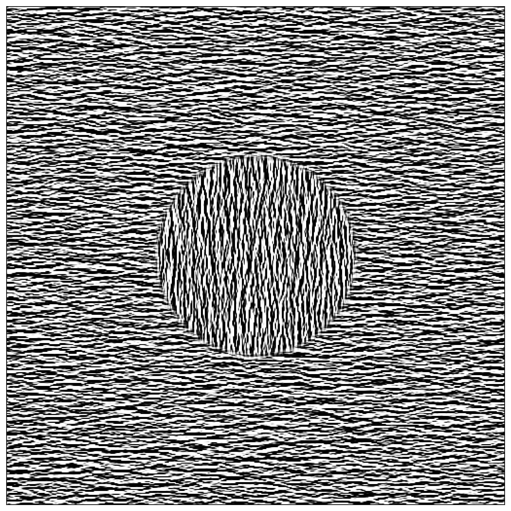

A textured Ouchi Illusion
The Ouchi illusion is a powerful demonstration that static images may produce an illusory movement. One striking aspect is that it makes you feel quite dizzy from trying to compensate for this illusory movement.

The illlusion is is generated by your own eye movements and is a consequence of the aperture problem, which is a fundamental problem in vision science. The aperture problem is the fact that the visual system can only integrate information along the direction of motion, and not perpendicular to it. This is because the visual system is made of a set of filters that are oriented in different directions, and the integration is done by summing the responses of these filters. The aperture problem is a problem because it means that the visual system cannot recover the direction of motion of a contour from the responses of these filters.
Here, we explore variations of this illusion which xwould use textures instead of regular angles using the MotionClouds library. The idea is to use the same texture in the two parts of the image (center vs surround), but to rotate by 90° the texture in the center:

Optimizing the parameters of the texture would help tell us what matters to generate that illusion...
Let's first initialize the notebook:
import numpy as np
import matplotlib.pyplot as plt
fig_width = 10
figsize = (fig_width, fig_width)
install and load the library¶
%pip install MotionClouds
In particular, we just generate one frame:
def sigmoid(x, # the input
slope=61.803, # this slope is inverse gold times 100
threshold=0.5 # the mean of x
):
# return (x > threshold).astype(np.float)
return 1 / (1 + np.exp(- slope * (x - threshold)))
import MotionClouds as mc
seed = 123456789
N = 512
mc.N_X, mc.N_Y, mc.N_frame = N, N, 1
fx, fy, ft = mc.get_grids(mc.N_X, mc.N_Y, mc.N_frame)
params = dict(theta=0, B_sf=.06, sf_0=.3, B_theta=.1)
params = dict(theta=np.pi/3, B_sf=.5, sf_0=.07, B_theta=.1)
params = dict(theta=0, B_sf=.2, sf_0=.2, B_theta=.25)
params = dict(theta=0, B_sf=.04, sf_0=.2, B_theta=.25)
env = mc.envelope_gabor(fx, fy, ft, **params)
image = mc.rectif(mc.random_cloud(env, seed=seed)).reshape((mc.N_X, mc.N_Y))
image = sigmoid(image)
import matplotlib.pyplot as plt
for key in ['xtick.bottom', 'xtick.labelbottom', 'ytick.left', 'ytick.labelleft']: plt.rcParams[key] = False
%matplotlib inline
fig, ax = plt.subplots(figsize=figsize)
_ = ax.imshow(image, cmap=plt.gray())
![No description has been provided for this image]()